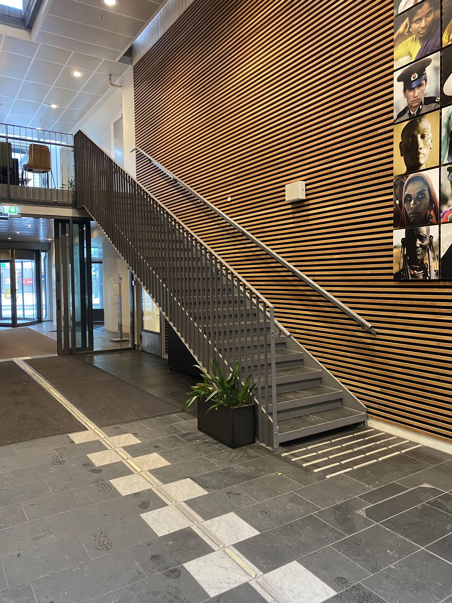
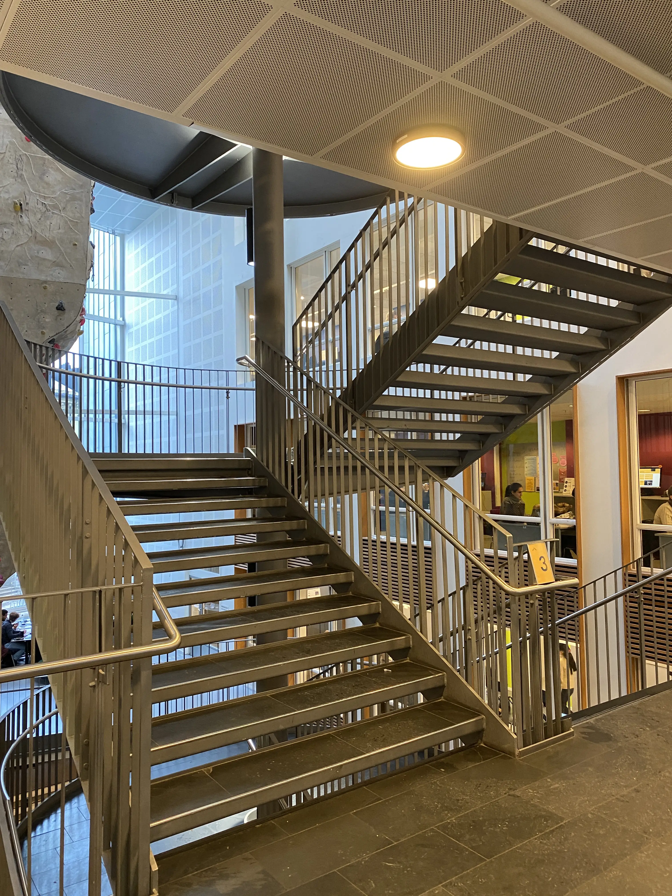
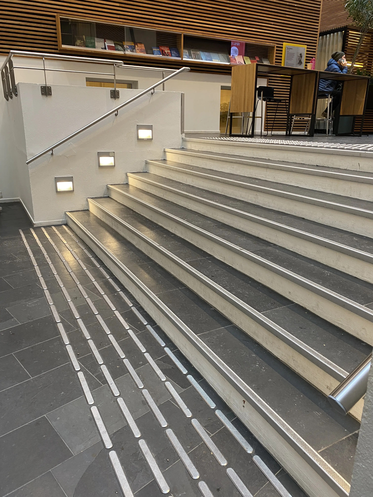

The Stairs of P35
Back Stairs
The back stairs of OsloMet, while often overshadowed by the grandeur of their front-facing counterparts, hold a distinct charm and significance within the university's architectural ensemble. These stairs, discreetly tucked away from the bustling main entrances, offer a quieter and more contemplative ascent. Meandering through hidden corners of the campus, the back stairs provide an intimate connection with the surrounding environment, offering glimpses of serene courtyards and lush greenery.
Main Stairs
The main stairs of OsloMet serve as the bustling arteries of academic life, linking diverse departments and floors within the university's central hub. With each step, students ascend into a vibrant tapestry of intellectual exploration and collaborative engagement. The sweeping design of these stairs captures the essence of OsloMet's architectural brilliance, combining form and function in a seamless dance of ascent.
Hall stairs
The hall stairs at OsloMet stand as a grand architectural spectacle, commanding attention and setting a majestic tone within the university's communal spaces. Stretching boldly across expansive hallways, these stairs serve as more than mere conduits between levels; they are elevated platforms of connection and convergence. The hall stairs become dynamic stages for impromptu interactions and communal gatherings, fostering a sense of unity among the diverse academic community.